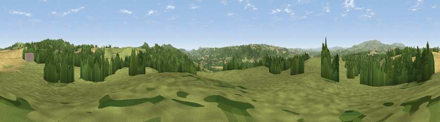

Viewpoint near Mamble
#11086 in England · top 22% of its area beats it · near Mamble · path 129 mWhere it is
The exact computed spot (SO 69825 70125). Click the marker for map links.
Public access: the nearest public right of way is about 129 m away — the final stretch may cross private land. Computed from Natural England's CRoW access layer and OpenStreetMap rights of way — not the legal definitive map. Always verify locally.
The view, rendered

A 360° render of this exact spot computed from the terrain model, tree cover and land cover — summer colours, afternoon light, calibrated against photographs of famous viewpoints. Real trees, hedges and buildings will differ in detail.
The panorama
Grey silhouette: terrain skyline in each direction (720 bearings, Earth curvature and refraction included). Dashed green: skyline with trees (+15 m) and buildings (+8 m) as obstacles. Blue strip: how far the ground is visible on each bearing.
Where the view opens
Wedge length = distance to the farthest visible ground on that bearing (vegetation-aware). Rings at 10, 25 and 50 km.
What fills the view
56% grassland · 26% woodland · 17% cropland ·
Angular shares of the visible panorama (visual magnitude), not map area. Landscape diversity 0.44 (0–1 Shannon).
Key numbers
More beautiful places nearby
The staircase of upgrades: each row has a higher view potential than everything closer. Driving times are estimates from straight-line distance, calibrated against real road routing — check an actual route before setting out.
| Place | Direction | Drive | Score |
|---|---|---|---|
| Viewpoint near Eardiston | SE · 2 km | ~5 min | 65.0 |
| Clows Top | NE · 2 km | ~6 min | 67.3 |
| Viewpoint near Bayton | NNE · 3 km | ~8 min | 67.5 |
| Viewpoint near Upper Sapey | SW · 6 km | ~12 min | 68.8 |
| Viewpoint near Upper Rochford | SW · 6 km | ~13 min | 71.0 |
| Abberley Hill | ESE · 6 km | ~13 min | 80.4 |
| Woodbury Hill | SE · 7 km | ~15 min | 81.6 |
| Viewpoint near Great Witley | SE · 8 km | ~16 min | 83.4 |
52.32838, -2.44420 · source: screening · position refined by local search. Computed location — check access rights before visiting.